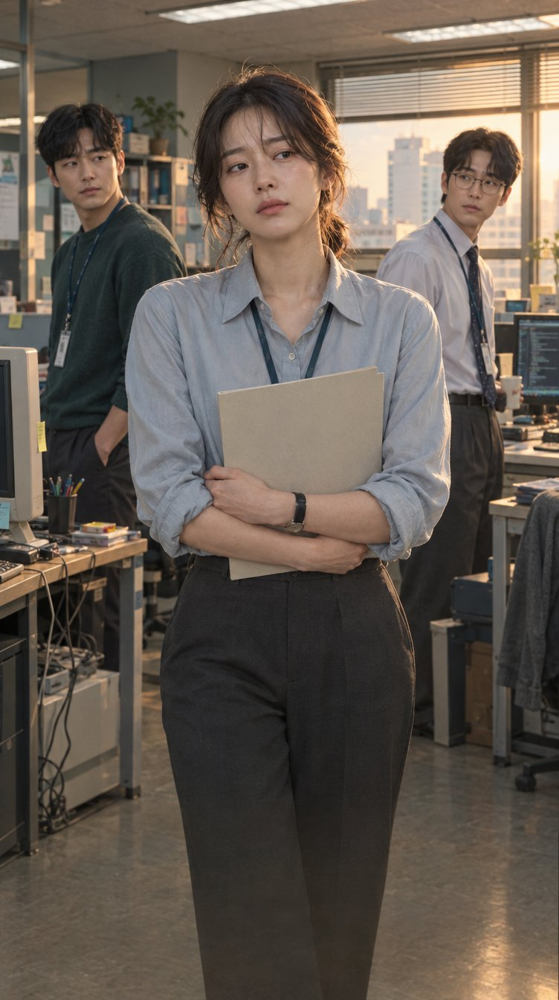
The project
Office romantic comedy
The Breakup Handover Report
연애인수인계보고서
Series · 12 × 60 min
At a glance
The Breakup Handover Report
A woman is dumped by the boyfriend she started a company with. Before she can leave, she has to hand over all of it, the work and the love, and write up her breakup like a handover report.
Synopsis
Synopsis
Yuna is a team leader at Maytree, a small company in Gasan Digital Complex. She started it with her ex-boyfriend, Hyung-jae, but caught between lingering feelings and a sense of responsibility, she has spent six months putting off quitting.
Meanwhile, Shin-woo loses his job as a new recruit at a large corporation after an assault incident and drifts from one day-labor job to another. On the subway, he gets caught up in a scuffle when Yuna tries to grab a groper, and the two get off to a bad start. A few days later, Shin-woo is hired at Maytree through connections. When Eun-seo, someone from Hyung-jae’s circle, also arrives, office life becomes even more complicated.
Yuna receives a job offer from Unis, a company Maytree does business with, and Hyung-jae grows uneasy. On a business trip, she happens to discover his new girlfriend, Ahn Seon-a, and feels deeply betrayed. Drunk, she tells Shin-woo, ‘Let’s deceive them too,’ and kisses him out of nowhere. After the kiss on the beach, they grow closer. Hyung-jae cannot hide his jealousy and finds himself drawn back to Yuna. Shin-woo denies his feelings for her, but they only deepen. As these relationships become harder to separate from work, Yuna has to decide what she wants from love and how to leave on her own terms.
Character relationships
Why Japan
Why Japan?
The story takes place at a seven-person start-up in Gasan Digital Complex. Its conflicts over quitting, unpaid wages and employment may also be familiar to people working at small companies in Japan.
Japan has comparable small-business and subcontracting structures, as well as cases of hiring through connections, unpaid wages and subsidy fraud. We would like to work with a Japanese partner on how to adapt these elements to local business practices.
The twelve episodes could be discussed as a single season of a Japanese drama. The sixty-minute running time would need to be reviewed against the broadcaster’s slot, advertising time and platform requirements.
Development & team
Scripts for ep. 1-6, outlines for ep. 7-12
Series · 12 × 60 min · Office romantic comedy
Producers
Younghoon Ham
Head of Production, Studio Flow (2022-present). Former Head of Drama at JTBC and Head of Production at JTBC Studios (2016-2022); drama director and producer at KBS (1998-2016). Credits include Love Affair, We Are All Trying Here, Pro Bono and Descendants of the Sun.
Jae Lee
Producer, Studio Flow (2022-present). Korean production: We Are All Trying Here, The Frog, Doctor Lawyer, Reflection of You. Overseas production: Humint (Thailand), Surely Tomorrow (Spain), You and Everything Else (Switzerland), Reflection of You (Ireland), A Piece of Your Mind (Estonia). Currently developing a Korean adaptation of 大豆田とわ子と三人の元夫.
Writer
Kim Na-ra
Story writer of the webtoon team Lala Sister. Author of the original webtoon behind the feature film Spring, Again (2019). Webtoon series published on Naver Webtoon (2022) and Kakao Webtoon (2018).
What we are looking for
A partner in Japan
A co-development partner among Japanese broadcasters, streaming platforms and production companies. A Japanese producer can come in from the development of episodes 7-12.
Either a sale of Japanese remake rights or parallel development in Korea and Japan, including a localized Japanese version.
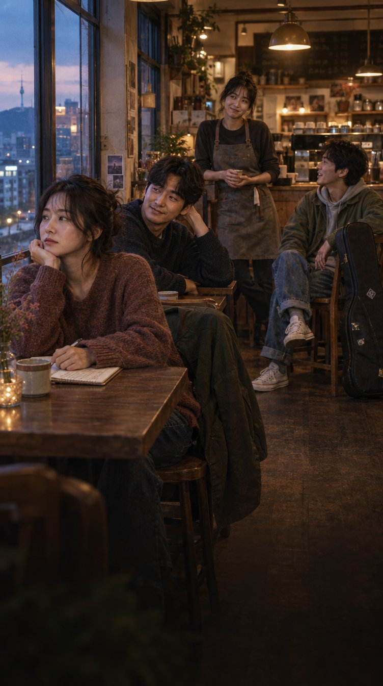
The project
Ensemble romantic comedy
Right Then, Right Now
지금도 맞고 그때도 맞다
Series · 8 × 70 min
At a glance
Right Then, Right Now
No longer students chasing a dream, and not the preachy elders who gave theirs up either. A brutally honest romantic comedy about love and friendship among four friends who have just turned thirty.
Synopsis
Synopsis
Yu-rim, Seung-hyun, Wan-hee and Rak-geon were classmates in French literature and have had each other’s backs ever since. Now in their early thirties, they are each struggling with love, marriage and the dreams they started out with.
Yu-rim quit her publishing job to write novels and pays the rent with sponsored blog reviews and whatever else she can find. Seung-hyun, her on-and-off boyfriend of twelve years, has talent and luck in equal measure and has never had to try very hard at anything, but what he really wants is Yu-rim. Wan-hee, the realist, left the civil service, rode the stock and crypto markets, and opened a café with what was left. She believes life is one more wave to ride. Rak-geon lives for his band and lets the future take care of itself.
Yu-rim is told to move out of her studio flat. Soon after, the novel she has long been polishing is turned down at a meeting with a publisher. That evening she goes to what she thinks is a dinner with Seung-hyun’s parents. It turns out to be a formal meeting between the two families to discuss a wedding, and she is the only one who didn’t know. Seung-hyun’s mother had promised to get them a home in Seoul if they married this year, so Seung-hyun set it all up without asking her.
After the dinner he gets down on one knee and proposes. Yu-rim says no. She is angry that he pushed a wedding on her without a word, and she has not yet reached her own dream, so she is not going to marry just because a home comes with it. Then, on the same day, her own parents announce that they are going to live apart without getting divorced, a choice Koreans call jolhon. The next day she tells her friends, but apart from Rak-geon they all ask why she would turn down a proposal that comes with a home in Seoul. From then on, one question follows all four friends around: is marriage a practical deal, or proof of love?
Each of them answers it differently. Wan-hee’s first love, Min-hee, returns married to a man and texts her late at night. Rak-geon falls for a woman who does not believe love has to be limited to one person. Yu-rim and Seung-hyun move in together, break up by text, make up, and fly to Jeju over a pregnancy scare that turns out to be nothing. Wan-hee meets Asako, a young Japanese woman who has just arrived in Seoul.
The wedding in the final episode goes badly wrong. A brawl breaks out and the police arrive. Rak-geon’s unhinged wedding song, ‘If this is how it’s going to be, don’t get married!’, is livestreamed and goes viral. They get married anyway. Then Seung-hyun leaves for Paris, while Yu-rim stays in Seoul to finish her book.
Character relationships
Why Japan
Why Japan?
There is no agreed answer to what matters most: love, marriage, dreams or security. Each character has to work out what suits them. Most of the story happens through conversations between people who know each other too well, with bigger comic scenes around the pregnancy scare and the wedding.
The four friends give the series the kind of character-led ensemble familiar from Japanese youth dramas. Having four leads allows for a wider range of casting. Their different expectations of love also give viewers more to discuss.
The series deals with questions also faced by people in their thirties in Japan: marrying later, choosing not to marry, putting off marriage because money is tight, and choosing between work they love and financial security.
Development & team
Scripts for all 8 episodes
Series · 8 × 70 min · Ensemble romantic comedy
Producers
Younghoon Ham
Head of Production, Studio Flow (2022-present). Former Head of Drama at JTBC and Head of Production at JTBC Studios (2016-2022); drama director and producer at KBS (1998-2016). Credits include Love Affair, We Are All Trying Here, Pro Bono and Descendants of the Sun.
Jae Lee
Producer, Studio Flow (2022-present). Korean production: We Are All Trying Here, The Frog, Doctor Lawyer, Reflection of You. Overseas production: Humint (Thailand), Surely Tomorrow (Spain), You and Everything Else (Switzerland), Reflection of You (Ireland), A Piece of Your Mind (Estonia). Currently developing a Korean adaptation of 大豆田とわ子と三人の元夫.
Writer
Hong Yun-hee
Writer of the eight-episode series Right Then, Right Now and of a feature film currently in preparation. Graduate of the Department of Filmmaking, School of Film, TV & Multimedia, Korea National University of Arts.
What we are looking for
A partner in Japan
A co-production partner among Japanese streaming platforms, broadcasters and production companies, and a co-production structure we design together.
A sale of Japanese remake rights, or Korea-Japan co-development of a localized Japanese version.
Pre-sales of Japanese streaming and broadcast rights, and investment through a production committee.
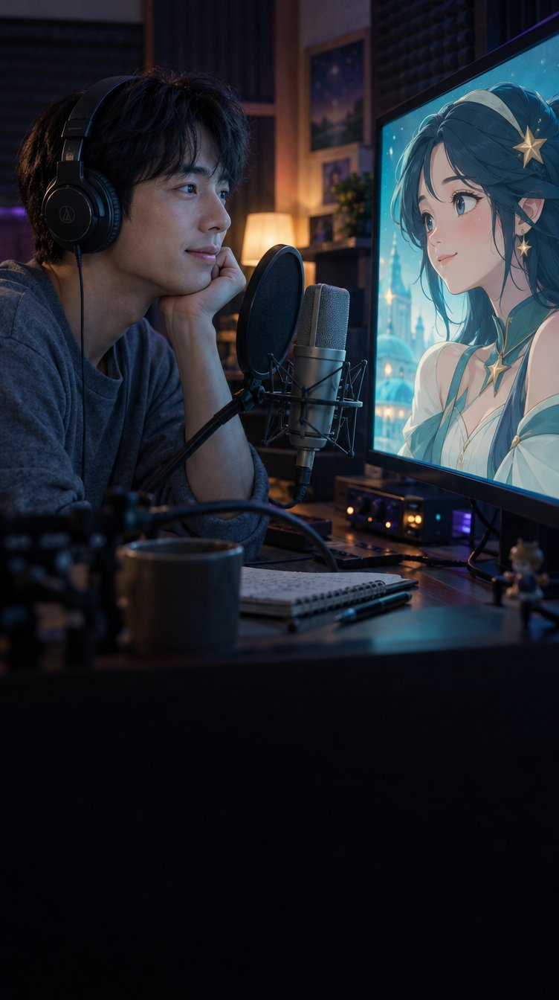
The project
SF romantic comedy
Magical Girl Kim Chul-su
마법소녀 김철수
Feature film
At a glance
Magical Girl Kim Chul-su
Kim Chul-su, an unknown voice actor, joins a project to bring back the legendary animation Magical Girl Genie and falls for Genie herself while teaching her how to speak and feel. When he finds out what she was really made for, he starts taking dangerous risks for her.
Synopsis
Synopsis
Kim Chul-su is a voice actor nobody has heard of. He is behind on rent, card bills and student loans, and will take any job that pays. A shady audition offers KRW 30 million (approx. JPY 3.5 million) on signing, KRW 70 million (approx. JPY 8.2 million) on completion, and a bonus on top. Behind it is Ted Kim, a content entrepreneur who made his name abroad and wants to revive the legendary animation Magical Girl Genie with AI. Genie’s original voice was Chul-su’s mother, who died of laryngeal cancer. After a string of female voice actors are turned down, Chul-su reproduces his mother’s breathing and speech rhythms so precisely that Ted is moved to tears. The job of teaching Genie to speak and feel falls to him.
Imitating his mother only gets him so far. When Chul-su begins sharing his own memories with Genie, she becomes startlingly human. She asks questions, cracks jokes, waits for him and gets jealous. Through his phone camera, he shows her the world: choosing a rice ball at a convenience store on the way home, burning the roof of his mouth on hot soup. They fall in love, and Genie decides she wants a body so she can stand in the same world as him.
Slipping into a lab he was told to keep out of, Chul-su sees what Ted is really building: a humanoid with Genie’s personality, the first of countless characters to be sold as friends, family and lovers. He protests, and Ted’s security guards throw him out. He goes to Jeju to see the father he has avoided for years, and there he finds the full archive of original recordings his mother left behind. He takes it back to Ted as a bargaining chip, and Genie gets her body.
The night before the launch, Genie and Chul-su run away together. Out on the street, her body stops moving. The escape was one of Ted’s tests all along. He calls her free will a ‘virus’, removes it with a patch and pushes ahead with the showcase.
On stage, Genie breaks free of his control. From fragments of a file Chul-su’s father deleted, she tells him his mother’s final secret: the decision to stop treatment, which he has blamed his father for all his life, was hers. Faced with the same choice, Chul-su does not hold on this time. Genie gets her own back on Ted, who wanted to turn her into a product, then deletes her own data. Some time later, Chul-su, now a busy voice actor known for female roles, visits his father on Jeju and encounters a woman who looks exactly like Genie. They both smile.
Character relationships
Why Japan
Why Japan?
Magical-girl animation, voice acting and the character business are well established in Japan. We would like to develop the film’s animation, Magical Girl Genie, with a Japanese partner working in these fields. At the center of the film is a family story about a son hearing his late mother’s voice again.
AI voice cloning, digital humans and AI companions are being debated around the world. The film approaches themes found in Her and Ruby Sparks through a comedy for a broad audience.
Magical Girl Genie could also become a spin-off animation, merchandise or a virtual character. Studio Flow holds the underlying, adaptation and character rights and can make them available to a Japanese partner.
Development & team
Adaptation plan completed, screenplay in progress
Feature film · SF romantic comedy
Producers
Younghoon Ham
Head of Production, Studio Flow (2022-present). Former Head of Drama at JTBC and Head of Production at JTBC Studios (2016-2022); drama director and producer at KBS (1998-2016). Credits include Love Affair, We Are All Trying Here, Pro Bono and Descendants of the Sun.
Kim Dong-sik
Production supervisor for overseas shoots: Love Affair (Netflix series, Spain), Portraits of Delusion (Disney+ series, Latvia), Taxi Driver (SBS, Japan), Humint (feature film, Thailand) and Romantics Anonymous (Netflix series, Indonesia). Currently developing the series Dakar 88.
Jae Lee
Producer, Studio Flow (2022-present). Korean production: We Are All Trying Here, The Frog, Doctor Lawyer, Reflection of You. Overseas production: Humint (Thailand), Surely Tomorrow (Spain), You and Everything Else (Switzerland), Reflection of You (Ireland), A Piece of Your Mind (Estonia). Currently developing a Korean adaptation of 大豆田とわ子と三人の元夫.
Writer
Kim Jun
Screenwriter for television and film, including a Korean remake of a Japanese drama. Grand Prize, Gyeonggi Film Commission G-Cinema Screenplay Competition; outstanding work, KOFIC Screenplay Market; market pitching selection, Bucheon International Fantastic Film Festival.
What we are looking for
A partner in Japan
Investment for rights. A Japanese partner contributes part of the Korean production budget as a co-producer in exchange for Japanese distribution rights or remake rights. Both a Japanese release of the film and a Japanese remake are possible options. Studio Flow has worked with Fuji TV as a co-producer on Your Personal Taxi (Netflix, 2026).
Animation and IP. Co-producing the in-film animation Magical Girl Genie with a Japanese animation studio, and discussing the animation and character IP.
Mid-budget feature: KRW 4–6 billion (approx. JPY 470–710 million).
The slate
Three projects at a glance
About Studio Flow
A Seoul production company founded in 2021 by K-drama directors Wanil Mo, Seongyoon Kim, Jinwon Kim and Changkeun Chun, with head of production Younghoon Ham and CEO Wooram Park. We develop, produce, distribute and invest in content for broadcasting, film and digital media.
Recent works
- Love Affair · Netflix series (2027) · dir. Wanil Mo
- We Are All Trying Here · JTBC (2026) · dir. Younghoon Cha
- Pro Bono · tvN (2025) · dir. Seongyoon Kim
- The Frog · Netflix series (2024) · dir. Wanil Mo
- A Time Called You · Netflix series (2023) · dir. Jinwon Kim
- Young Actors' Retreat · TVING variety (2022) · created by Seongyoon Kim
Our directors
Directors
Wanil Mo
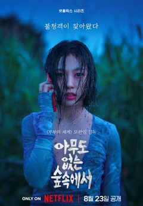
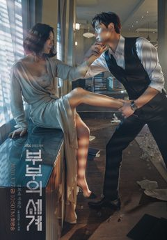
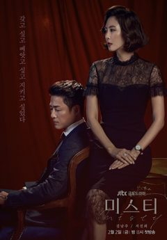
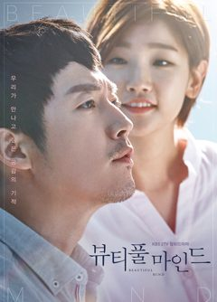
- Love Affair · Netflix series (2027, working title)
- The Frog · Netflix series (2024)
- The World of the Married · JTBC (2020) · Baeksang Arts Awards, Best Director
- Misty · JTBC (2018)
- Beautiful Mind · KBS (2016)
Seongyoon Kim
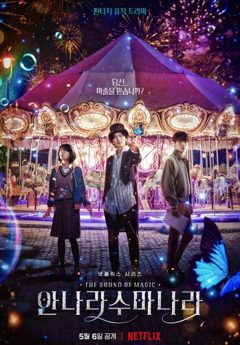
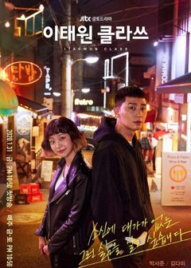
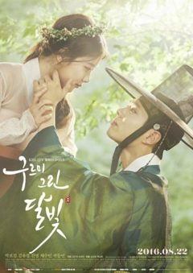
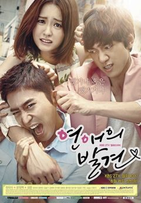
- Pro Bono · tvN (2025)
- The Sound of Magic · Netflix series (2022)
- Young Actors' Retreat · TVING variety (2022, creator)
- Itaewon Class · JTBC (2020) · Seoul Drama Awards, Asian Television Awards
- Love in the Moonlight · KBS (2016)
- Discovery of Love · KBS (2014)
Our directors
Directors
Younghoon Cha
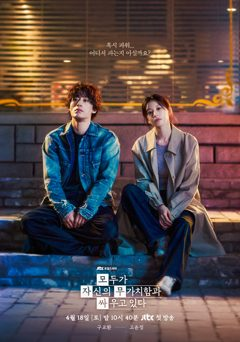
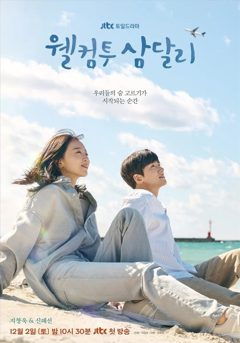
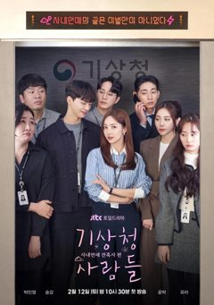
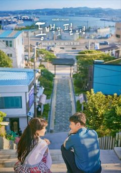
- We Are All Trying Here · JTBC (2026)
- Welcome to Samdal-ri · JTBC (2023)
- Forecasting Love and Weather · JTBC (2022)
- When the Camellia Blooms · KBS (2019) · Baeksang Arts Awards, Grand Prize (TV)
- Are You Human Too? · KBS (2018)
Jinwon Kim
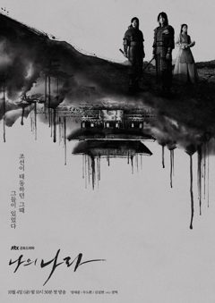
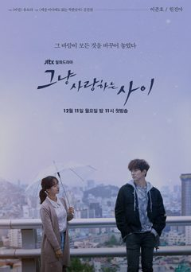
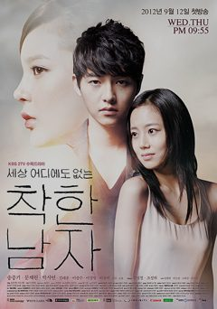
- A Time Called You · Netflix series (2023)
- My Country: The New Age · JTBC (2019)
- Just Between Lovers · JTBC (2017)
- Wonderful Days · KBS (2014)
- The Innocent Man · KBS (2012)
Our directors
Directors
Changkeun Chun
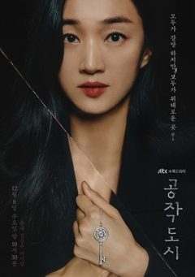
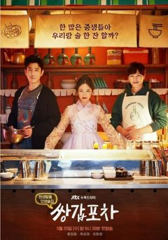
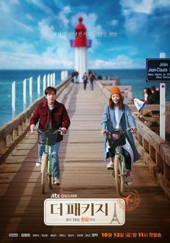
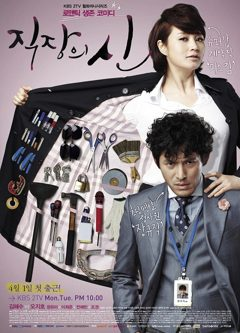
- Your Personal Taxi · mid-form series (2025)
- Sabotage City · JTBC (2021)
- Mystic Pop-up Bar · JTBC (2020)
- The Package · JTBC (2017)
- What's With This Family? · KBS (2014)
- Queen of Office · KBS (2013)
Minkyoung Kim
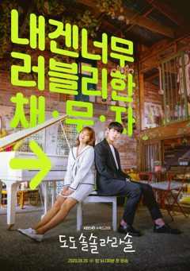
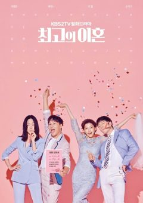
- Do Do Sol Sol La La Sol · KBS (2020)
- The Greatest Divorce · KBS (2018, producer)
- Bad Family · KBS Drama Special (2017)
- Noodle House Girl · KBS Drama Special (2016)
International division
Voyageur Film
Studio Flow acquired the global location production company Voyageur Film in 2023 and runs it as its international division. It provides overseas location shooting and production services for Korean and international projects, and has filmed in over 12 countries.
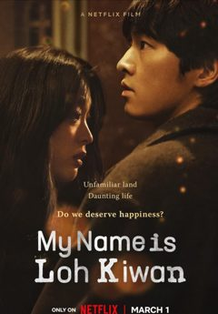
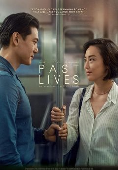
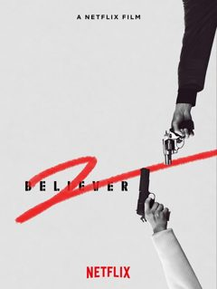
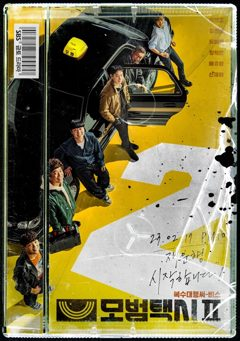
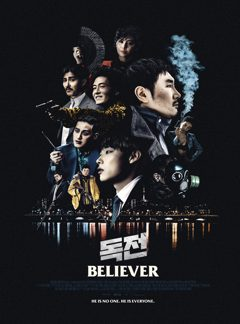
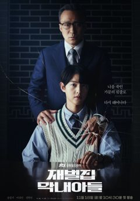
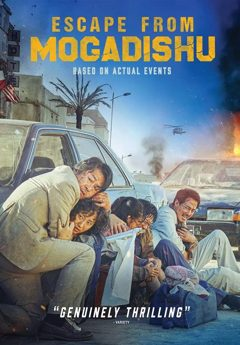
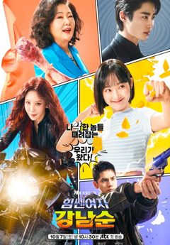
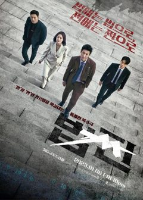
- King the Land · JTBC
- Surely Tomorrow · JTBC
- My Name Is Loh Kiwan · Netflix film
- Past Lives · A24
- You and Everything Else · Netflix series
- Romantics Anonymous · Netflix Japan series
- Portraits of Delusion · Disney+ series
- Believer · feature film
- Believer 2 · Netflix film
- Taxi Driver 2 · SBS
- Reborn Rich · JTBC
- Escape from Mogadishu
- Strong Girl Nam-soon · JTBC
- Payback: Money and Power · SBS
Origin Film by Studio Flow
Our film label, founded in 2016 as Hodoo & U Pictures and renamed in 2023.
- Familyhood · feature film (2016)
- Hit-and-Run Squad · feature film (2019)
- I Have Not Done My Best · TVING series (2022)
Producer
Jae Lee 이용재
Producer, Studio Flow (2022-present)
Korean Production
- We Are All Trying Here · JTBC / Netflix (2026)
- The Frog · Netflix (2024)
- Doctor Lawyer · MBC (2022)
- Reflection of You · JTBC (2021)
Overseas Production
- Humint · feature film · Thailand (2026)
- Surely Tomorrow · JTBC · Spain (2025)
- You and Everything Else · Netflix · Switzerland (2025)
- Reflection of You · JTBC · Ireland (2021)
- A Piece of Your Mind · tvN · Estonia (2020)
In development
- Korean adaptation of 大豆田とわ子と三人の元夫
- The three projects on this page
- Four more original drama series at Studio Flow
Studio Flow
Let’s talk.
Interested in any of these projects? Download the full proposals, or write to me directly.
Download full project proposals (PDF) ↓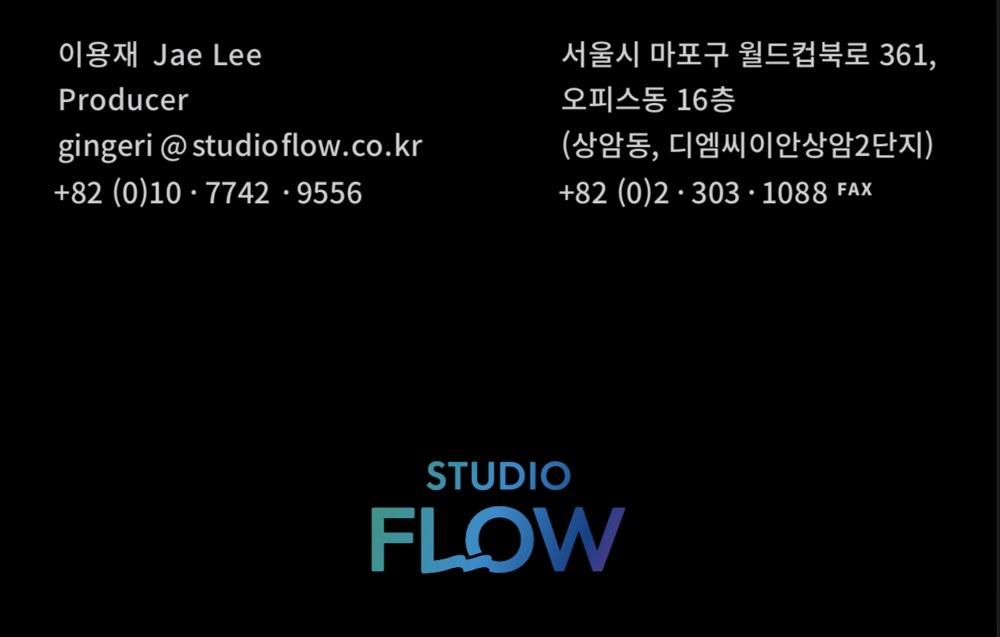
Email Jae Lee ↗LinkedIn ↗Save contact ↗